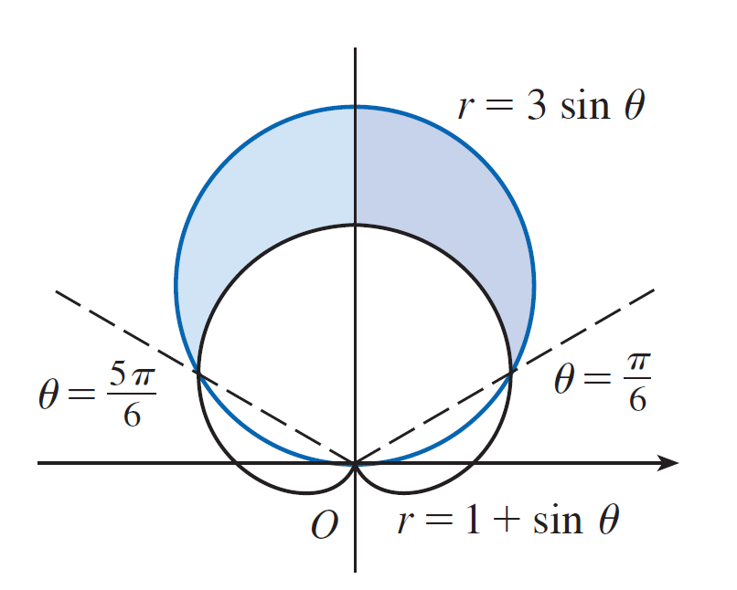
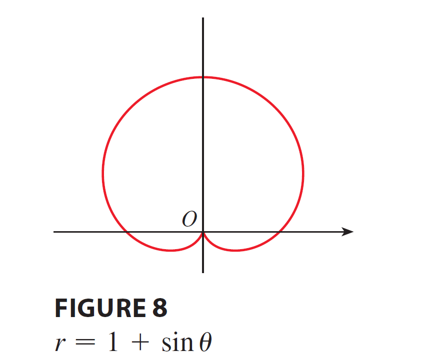

<!DOCTYPE html>
<html lang="zh-TW">
<head>
    <meta charset="UTF-8">
    <meta name="viewport" content="width=device-width, initial-scale=1.0">
    <title>微積分 (2) - 10.4 極座標微積分 | Prof. Wu Wen-Chuan</title>
    
    <!-- 1. 核心樣式與庫載入 -->
    <!-- Tailwind CSS (樣式框架) -->
    <script src="https://cdn.tailwindcss.com"></script>
    
    <!-- React & ReactDOM (前端框架) -->
    <script crossorigin src="https://unpkg.com/react@18/umd/react.production.min.js"></script>
    <script crossorigin src="https://unpkg.com/react-dom@18/umd/react-dom.production.min.js"></script>
    
    <!-- Babel (JSX 編譯器) -->
    <script src="https://unpkg.com/@babel/standalone/babel.min.js"></script>

    <!-- KaTeX (數學公式渲染) -->
    <link rel="stylesheet" href="https://cdn.jsdelivr.net/npm/katex@0.16.9/dist/katex.min.css">
    <script src="https://cdn.jsdelivr.net/npm/katex@0.16.9/dist/katex.min.js"></script>
    
    <!-- 自定義樣式 -->
    <style>
        /* 平滑滾動 */
        html { scroll-behavior: smooth; }
        /* 自定義滾動條 */
        ::-webkit-scrollbar { width: 8px; }
        ::-webkit-scrollbar-track { background: #fdf2f8; }
        ::-webkit-scrollbar-thumb { background: #fbcfe8; border-radius: 4px; }
        ::-webkit-scrollbar-thumb:hover { background: #f472b6; }
        /* 數學公式容器樣式 - 允許水平滾動 */
        .math-display { overflow-x: auto; overflow-y: hidden; }
    </style>
</head>
<body class="bg-yellow-50 font-sans text-gray-800 selection:bg-pink-200">
    <div id="root"></div>

    <script type="text/babel">
        const { useState, useEffect, useRef } = React;

        // ==========================================
        // 2. 工具組件 (Utilities)
        // ==========================================

        /**
         * LaTeX 渲染組件
         */
        const Latex = ({ children, block = false, fontSize = '0.9em' }) => {
            const spanRef = useRef(null);

            useEffect(() => {
                if (window.katex && spanRef.current) {
                    try {
                        const content = typeof children === 'string' ? children : '';
                        window.katex.render(content, spanRef.current, {
                            throwOnError: false,
                            displayMode: block,
                        });
                    } catch (e) {
                        console.warn("KaTeX render error", e);
                        if (spanRef.current) spanRef.current.innerText = String(children);
                    }
                }
            }, [children, block]);

            return <span ref={spanRef} style={{ margin: '0 4px', display: block ? 'block' : 'inline-block', fontSize: fontSize }} />;
        };

        // ==========================================
        // 3. UI 子組件 (Sub-components)
        // ==========================================

        const Navbar = ({ t, isMenuOpen, setIsMenuOpen, toggleLang }) => {
            return (
                <nav className="sticky top-0 z-50 w-full bg-white/90 px-6 py-4 shadow-md backdrop-blur-md transition-all">
                    <div className="flex items-center justify-between max-w-7xl mx-auto">
                        <div className="flex flex-col">
                            <h1 className="bg-gradient-to-r from-pink-500 to-purple-500 bg-clip-text text-2xl font-black tracking-tight text-transparent md:text-3xl">
                                {t.title}
                            </h1>
                            <span className="text-base font-medium text-gray-500 md:text-xl">
                                {t.teacher}
                            </span>
                        </div>

                        <div className="hidden items-center gap-6 md:flex">
                            {t.menu.map((item, i) => (
                                <a key={i} href={`#part${i+1}`} className="text-xl font-bold text-gray-600 hover:text-pink-500 transition-colors">{item}</a>
                            ))}
                            <button 
                                onClick={toggleLang}
                                className="flex items-center gap-2 rounded-full bg-purple-100 px-5 py-2 text-lg font-bold text-purple-700 transition-all hover:bg-purple-200 hover:shadow-md active:scale-95"
                            >
                                <svg xmlns="http://www.w3.org/2000/svg" width="20" height="20" viewBox="0 0 24 24" fill="none" stroke="currentColor" strokeWidth="2" strokeLinecap="round" strokeLinejoin="round"><circle cx="12" cy="12" r="10"/><line x1="2" x2="22" y1="12" y2="12"/><path d="M12 2a15.3 15.3 0 0 1 4 10 15.3 15.3 0 0 1-4 10 15.3 15.3 0 0 1-4-10 15.3 15.3 0 0 1 4-10z"/></svg>
                                {t.langBtn}
                            </button>
                        </div>

                        <button 
                            className="rounded-full bg-gray-100 p-2 text-gray-600 md:hidden hover:bg-gray-200"
                            onClick={() => setIsMenuOpen(!isMenuOpen)}
                        >
                            <svg xmlns="http://www.w3.org/2000/svg" width="24" height="24" viewBox="0 0 24 24" fill="none" stroke="currentColor" strokeWidth="2" strokeLinecap="round" strokeLinejoin="round"><line x1="4" x2="20" y1="12" y2="12"/><line x1="4" x2="20" y1="6" y2="6"/><line x1="4" x2="20" y1="18" y2="18"/></svg>
                        </button>
                    </div>

                    {isMenuOpen && (
                        <div className="mt-4 flex flex-col gap-4 border-t border-gray-100 pt-4 md:hidden">
                            {t.menu.map((item, i) => (
                                <a key={i} href={`#part${i+1}`} onClick={() => setIsMenuOpen(false)} className="px-2 py-1 text-lg font-bold text-gray-600">{item}</a>
                            ))}
                            <button 
                                onClick={() => { toggleLang(); setIsMenuOpen(false); }}
                                className="flex w-full items-center justify-center gap-2 rounded-xl bg-purple-100 py-3 font-bold text-purple-700"
                            >
                                <svg xmlns="http://www.w3.org/2000/svg" width="20" height="20" viewBox="0 0 24 24" fill="none" stroke="currentColor" strokeWidth="2" strokeLinecap="round" strokeLinejoin="round"><circle cx="12" cy="12" r="10"/><line x1="2" x2="22" y1="12" y2="12"/><path d="M12 2a15.3 15.3 0 0 1 4 10 15.3 15.3 0 0 1-4 10 15.3 15.3 0 0 1-4-10 15.3 15.3 0 0 1 4-10z"/></svg>
                                {t.langBtn}
                            </button>
                        </div>
                    )}
                </nav>
            );
        };

        const UnitHeader = ({ t }) => (
            <div className="mb-8 text-center animate-in fade-in zoom-in duration-500">
                <h2 className="mb-2 text-4xl font-black text-black md:text-5xl">
                    <span className="mr-3 text-black">{t.unitId}</span>
                    {t.unitTitle}
                </h2>
                <p className="text-2xl font-bold text-gray-500">{t.unitSub}</p>
            </div>
        );

        const Part1 = ({ t }) => (
            <section id="part1" className="scroll-mt-32 rounded-[2rem] bg-pink-100 p-8 shadow-lg shadow-pink-100/50 md:p-12 transition-all hover:shadow-xl">
                <div className="mb-6 flex items-center gap-3">
                    <div className="flex h-12 w-12 items-center justify-center rounded-full bg-white text-pink-500 shadow-sm">
                        <svg xmlns="http://www.w3.org/2000/svg" width="28" height="28" viewBox="0 0 24 24" fill="none" stroke="currentColor" strokeWidth="2" strokeLinecap="round" strokeLinejoin="round"><path d="M2 3h6a4 4 0 0 1 4 4v14a3 3 0 0 0-3-3H2z"/><path d="M22 3h-6a4 4 0 0 0-4 4v14a3 3 0 0 1 3-3h7z"/></svg>
                    </div>
                    <h2 className="text-2xl font-black text-pink-700 md:text-3xl">{t.part1Title}</h2>
                </div>
                
                <div className="space-y-8 rounded-3xl bg-white/60 p-6 md:p-8">
                    <h3 className="text-2xl font-bold text-gray-800">{t.part1Topic}</h3>
                    <div className="text-xl leading-relaxed text-gray-700">{t.part1Desc}</div>

                    {/* 觀念類比區塊 */}
                    <div className="bg-purple-50 py-4 px-6 rounded-2xl border-l-8 border-purple-400">
                        <h4 className="font-bold text-purple-800 text-xl mb-2 flex items-center gap-2">
                            <span>💡</span> {t.analogyTitle}
                        </h4>
                        <div className="text-xl text-gray-700 leading-relaxed">
                            {t.analogyDesc}
                        </div>
                    </div>
                    
                    {/* Formula 1 Block (Area) */}
                    <div className="bg-pink-50 py-4 px-6 rounded-2xl border-l-8 border-pink-400">
                        <h4 className="font-bold text-pink-800 text-xl mb-2">{t.formula1Title}</h4>
                        <div className="text-center my-4 math-display bg-white/50 p-4 rounded-xl">
                            <Latex block>{'\\displaystyle A = \\int_{a}^{b} \\frac{1}{2}[f(\\theta)]^2 \\, d\\theta = \\int_{a}^{b} \\frac{1}{2}r^2 \\, d\\theta'}</Latex>
                        </div>
                    </div>

                    {/* Formula 2 Block (Arc Length) */}
                    <div className="bg-white p-6 rounded-2xl border-l-8 border-pink-400 shadow-sm">
                        <h4 className="font-bold text-pink-800 text-xl mb-4">{t.formula2Title}</h4>
                        <div className="text-center my-4 math-display bg-blue-50 p-4 rounded-xl">
                            <Latex block>{'\\displaystyle L = \\int_{a}^{b} \\sqrt{r^2 + \\left(\\frac{dr}{d\\theta}\\right)^2} \\, d\\theta'}</Latex>
                        </div>
                    </div>

                    {/* Formula 3 Block (Tangent) */}
                    <div className="bg-white border-2 border-pink-300 py-4 px-6 rounded-2xl text-center shadow-sm">
                        <div className="text-xl font-bold text-pink-700 mb-2">{t.formula3Title}</div>
                        <div className="math-display text-lg">
                            <Latex block>{'\\displaystyle \\frac{dy}{dx} = \\frac{r\'\\sin\\theta + r\\cos\\theta}{r\'\\cos\\theta - r\\sin\\theta}'}</Latex>
                        </div>
                    </div>
                </div>
            </section>
        );

        const Part2 = ({ t, activeExList, activeExampleId, setActiveExampleId }) => {
            const activeEx = activeExList.find(e => e.id === activeExampleId) || activeExList[0];
            return (
                <section id="part2" className="scroll-mt-32 rounded-[2rem] bg-blue-100 p-8 shadow-lg shadow-blue-100/50 md:p-12 transition-all hover:shadow-xl">
                    <div className="mb-6 flex items-center gap-3">
                        <div className="flex h-12 w-12 items-center justify-center rounded-full bg-white text-blue-500 shadow-sm">
                            <svg xmlns="http://www.w3.org/2000/svg" width="28" height="28" viewBox="0 0 24 24" fill="none" stroke="currentColor" strokeWidth="2" strokeLinecap="round" strokeLinejoin="round"><rect width="16" height="20" x="4" y="2" rx="2"/><line x1="8" x2="16" y1="6" y2="6"/><line x1="16" x2="16" y1="14" y2="18"/><path d="M16 10h.01"/><path d="M12 10h.01"/><path d="M8 10h.01"/><path d="M12 14h.01"/><path d="M8 14h.01"/><path d="M12 18h.01"/><path d="M8 18h.01"/></svg>
                        </div>
                        <h2 className="text-2xl font-black text-blue-700 md:text-3xl">{t.part2Title}</h2>
                    </div>

                    <div className="mb-8 flex flex-wrap gap-3">
                        {activeExList.map((ex) => (
                            <button
                                key={ex.id}
                                onClick={() => setActiveExampleId(ex.id)}
                                className={`rounded-full px-6 py-3 text-lg font-bold transition-all shadow-sm ${
                                    activeExampleId === ex.id
                                        ? "bg-blue-600 text-white shadow-lg shadow-blue-500/30 scale-105"
                                        : "bg-white text-blue-600 hover:bg-blue-50 hover:scale-105"
                                }`}
                            >
                                {t.btnLabel} {ex.id}
                            </button>
                        ))}
                    </div>

                    <div className="space-y-8">
                        <div key={activeEx.id} className="rounded-3xl bg-white/60 p-6 md:p-8 shadow-inner">
                            <div className="border-b-2 border-blue-200 pb-6 mb-6">
                                <h3 className="text-2xl font-bold text-blue-800 mb-3">{activeEx.title}</h3>
                                <div className="flex flex-wrap items-center gap-4 text-lg font-bold text-gray-800">
                                    <span className="bg-blue-100 text-blue-800 px-3 py-1 rounded-lg">{t.btnLabel} {activeEx.id}:</span>
                                    <div className="rounded-xl bg-white px-6 py-3 text-blue-600 shadow-md ring-1 ring-blue-100 math-display">
                                        <Latex block fontSize="0.9em">{activeEx.math}</Latex>
                                    </div>
                                </div>
                            </div>

                            <div className="space-y-6">
                                {activeEx.steps.map((step, idx) => (
                                    <div key={idx} className="group rounded-2xl bg-white p-6 ring-2 ring-blue-200 transition-all hover:shadow-lg hover:ring-blue-400">
                                        <h4 className="mb-3 flex items-center gap-3 text-lg font-bold text-blue-700">
                                            <span className="flex h-8 w-8 items-center justify-center rounded-full bg-blue-600 text-sm text-white font-black">
                                                {idx + 1}
                                            </span>
                                            {step.t}
                                        </h4>
                                        <div className="mb-4 text-lg text-gray-600 pl-11">{step.d}</div>
                                        <div className="bg-blue-50 p-4 text-center text-lg font-bold text-blue-900 rounded-xl math-display border border-blue-100">
                                            <Latex block fontSize="0.9em">{step.m}</Latex>
                                        </div>
                                    </div>
                                ))}
                            </div>
                        </div>
                    </div>
                </section>
            );
        };

        const Part3 = ({ t, activePracList, activePracticeId, setActivePracticeId }) => {
            const activePrac = activePracList.find(p => p.id === activePracticeId) || activePracList[0];
            return (
                <section id="part3" className="scroll-mt-32 rounded-[2rem] bg-green-100 p-8 shadow-lg shadow-green-100/50 md:p-12 transition-all hover:shadow-xl">
                    <div className="flex items-center gap-3 mb-6">
                        <div className="flex h-12 w-12 items-center justify-center rounded-full bg-white text-green-500 shadow-sm">
                            <svg xmlns="http://www.w3.org/2000/svg" width="28" height="28" viewBox="0 0 24 24" fill="none" stroke="currentColor" strokeWidth="2" strokeLinecap="round" strokeLinejoin="round"><path d="m12 19 7-7 3 3-7 7-3-3z"/><path d="m18 13-1.5-7.5L2 2l3.5 14.5L13 18l5-5z"/><path d="m2 2 7.586 7.586"/><circle cx="11" cy="11" r="2"/></svg>
                        </div>
                        <h2 className="text-2xl font-black text-green-700 md:text-3xl">{t.part3Title}</h2>
                    </div>

                    <div className="mb-8 flex flex-wrap gap-3">
                        {activePracList.map((p) => (
                            <button
                                key={p.id}
                                onClick={() => setActivePracticeId(p.id)}
                                className={`rounded-full px-6 py-3 text-lg font-bold transition-all shadow-sm ${
                                    activePracticeId === p.id
                                        ? "bg-green-600 text-white shadow-lg shadow-green-500/30 scale-105"
                                        : "bg-white text-green-600 hover:bg-green-50 hover:scale-105"
                                }`}
                            >
                                {t.btnPracticeLabel} {p.id}
                            </button>
                        ))}
                    </div>

                    <div className="mt-4 rounded-3xl bg-white/60 p-6 md:p-8">
                        <p className="mb-8 text-xl text-gray-700 font-medium">{t.part3Desc}</p>
                        
                        <div key={activePrac.id} className="rounded-3xl bg-white p-6 md:p-8 shadow-md border-2 border-green-300 animate-in fade-in slide-in-from-bottom-4 duration-300">
                            <div className="border-b-2 border-green-100 pb-6 mb-6">
                                <h3 className="text-2xl font-bold text-green-800 mb-3">{activePrac.title}</h3>
                                <div className="flex flex-wrap items-center gap-4 text-lg font-bold text-gray-800">
                                    <span className="bg-green-100 text-green-800 px-3 py-1 rounded-lg">{t.btnPracticeLabel} {activePrac.id}:</span>
                                    <div className="rounded-xl bg-white px-6 py-3 text-green-700 shadow-md ring-1 ring-green-100 math-display">
                                        <Latex block fontSize="0.9em">{activePrac.math}</Latex>
                                    </div>
                                </div>
                            </div>

                            <div className="mt-6 space-y-6">
                                {activePrac.steps.map((step, idx) => (
                                    <div key={idx} className="group rounded-2xl bg-white p-6 ring-2 ring-green-200 transition-all hover:shadow-lg hover:ring-green-400">
                                        <h4 className="mb-3 flex items-center gap-3 text-lg font-bold text-green-600">
                                            <span className="flex h-8 w-8 items-center justify-center rounded-full bg-green-600 text-sm text-white font-black">
                                                {idx + 1}
                                            </span>
                                            {step.t}
                                        </h4>
                                        <div className="mb-4 text-lg text-gray-600 pl-11">{step.d}</div>
                                        <div className="bg-green-50 p-4 text-center text-lg font-bold text-green-800 rounded-xl math-display border border-green-100">
                                            <Latex block fontSize="0.9em">{step.m}</Latex>
                                        </div>
                                    </div>
                                ))}
                            </div>
                        </div>
                    </div>
                </section>
            );
        };

        const App = () => {
            const [lang, setLang] = useState('zh');
            const [katexLoaded, setKatexLoaded] = useState(false);
            const [isMenuOpen, setIsMenuOpen] = useState(false);
            const [activeExampleId, setActiveExampleId] = useState(1);
            const [activePracticeId, setActivePracticeId] = useState(1);

            useEffect(() => {
                const checkKatex = setInterval(() => {
                    if (window.katex) {
                        setKatexLoaded(true);
                        clearInterval(checkKatex);
                    }
                }, 100);
                setTimeout(() => setKatexLoaded(true), 3000); 
                return () => clearInterval(checkKatex);
            }, []);

            const toggleLang = () => {
                setLang(prev => prev === 'zh' ? 'en' : 'zh');
                setIsMenuOpen(false);
            };

            const t = DATA[lang];
            const activeExList = EXAMPLES_DATA[lang];
            const activePracList = PRACTICE_DATA[lang];

            if (!katexLoaded) {
                return (
                    <div className="flex h-screen w-full items-center justify-center bg-yellow-50 text-xl font-bold text-gray-500">
                        Loading Math Engine...
                    </div>
                );
            }

            return (
                <div className="min-h-screen bg-yellow-50 font-sans text-gray-800 selection:bg-pink-200">
                    <Navbar t={t} isMenuOpen={isMenuOpen} setIsMenuOpen={setIsMenuOpen} toggleLang={toggleLang} />
                    <main className="mx-auto mt-16 flex max-w-6xl flex-col gap-16 px-4 pb-20">
                        <UnitHeader t={t} />
                        <Part1 t={t} />
                        <Part2 t={t} activeExList={activeExList} activeExampleId={activeExampleId} setActiveExampleId={setActiveExampleId} />
                        <Part3 t={t} activePracList={activePracList} activePracticeId={activePracticeId} setActivePracticeId={setActivePracticeId} />
                    </main>
                    <footer className="mt-12 bg-white py-12 text-center text-gray-400 border-t border-gray-100">
                        <p className="text-lg">© 2025 Calculus (2) Course. Prof. Wu Wen-Chuan.</p>
                        <p className="mt-2 text-sm">Designed for Student Success</p>
                    </footer>
                </div>
            );
        };

        // ==========================================
        // 4. 資料定義 (Data)
        // ==========================================

        const DATA = {
            zh: {
                title: "微積分 (2)",
                teacher: "授課老師: 吳文銓 (Prof. Wu Wen-Chuan)",
                menu: ["核心概念", "範例說明", "動手練習"],
                langBtn: "English",
                unitId: "10.4",
                unitTitle: "極座標中的微積分",
                unitSub: "Calculus in Polar Coordinates",
                part1Title: "第一部分：核心概念",
                part1Topic: "極座標曲線的面積、弧長與切線",
                part1Desc: (
                    <span>
                        本單元將微積分的核心運算（積分、微分）應用於極座標曲線。我們不再計算長方形面積，而是計算「扇形」面積。
                    </span>
                ),
                analogyTitle: "觀念類比：披薩切片 (Pizza Slicing)",
                analogyDesc: (
                    <span>
                        極座標面積的計算就像是「切披薩」。我們從原點出發，把區域切成無數個極細的「三角形扇形」。每一片披薩的半徑是 <Latex>{'r'}</Latex>，頂角是微小的 <Latex>{'d\\theta'}</Latex>，單片面積為 <Latex>{'\\frac{1}{2}r^2 d\\theta'}</Latex>。把所有切片加總起來（積分），就是總面積。
                    </span>
                ),
                formula1Title: "1. 面積 (Area)",
                formula2Title: "2. 弧長 (Arc Length)",
                formula3Title: "3. 切線斜率 (Tangent Slope)",
                part2Title: "第二部分：範例說明",
                part3Title: "第三部分：動手練習",
                part3Desc: "請嘗試解決以下題目，並參考詳細步驟核對：",
                btnLabel: "例題",
                btnPracticeLabel: "練習題"
            },
            en: {
                title: "Calculus (2)",
                teacher: "Instructor: Prof. Wu Wen-Chuan",
                menu: ["Concepts", "Examples", "Practice"],
                langBtn: "繁體中文",
                unitId: "10.4",
                unitTitle: "Calculus in Polar Coordinates",
                unitSub: "Calculus in Polar Coordinates",
                part1Title: "Part 1: Core Concepts",
                part1Topic: "Area, Arc Length, and Tangents",
                part1Desc: (
                    <span>
                        This section applies calculus tools to polar curves. Instead of summing rectangles, we sum "sectors" to find the area.
                    </span>
                ),
                analogyTitle: "Analogy: Pizza Slicing",
                analogyDesc: (
                    <span>
                        Calculating area in polar coordinates is like "slicing a pizza". We divide the region into infinitely many thin "sectors" radiating from the origin. Each slice has radius <Latex>{'r'}</Latex> and angle <Latex>{'d\\theta'}</Latex>, with area <Latex>{'\\frac{1}{2}r^2 d\\theta'}</Latex>. The sum (integral) of these slices gives the total area.
                    </span>
                ),
                formula1Title: "1. Area",
                formula2Title: "2. Arc Length",
                formula3Title: "3. Tangent Slope",
                part2Title: "Part 2: Examples",
                part3Title: "Part 3: Practice",
                part3Desc: "Solve the problems and check the detailed steps below:",
                btnLabel: "Ex",
                btnPracticeLabel: "Q"
            }
        };

        const EXAMPLES_DATA = {
            zh: [
                {
                    id: 1, label: "Ex 1", title: "玫瑰線葉片面積 (P.695)",
                    math: "\\displaystyle r = \\cos 2\\theta",
                    steps: [
                        { t: "Step 1: 確定積分範圍 (Find Bounds)", d: (<span>找出 <Latex>{'r=0'}</Latex> 的角度。當 <Latex>{'\\cos 2\\theta = 0'}</Latex> 時，<Latex>{'2\\theta = \\pm \\pi/2'}</Latex>。</span>), m: "\\displaystyle \\theta = \\pm \\frac{\\pi}{4} \\implies [-\\frac{\\pi}{4}, \\frac{\\pi}{4}]" },
                        { t: "Step 2: 建立積分式 (Setup)", d: (<span>利用對稱性，計算 <Latex>{'[0, \\pi/4]'}</Latex> 再乘以 2。</span>), m: "\\displaystyle A = 2 \\int_{0}^{\\pi/4} \\frac{1}{2}r^2 \\, d\\theta = \\int_{0}^{\\pi/4} (\\cos 2\\theta)^2 \\, d\\theta" },
                        { t: "Step 3: 半角公式 (Half-Angle Formula)", d: (<span>將平方項降次：<Latex>{'\\cos^2 u = \\frac{1+\\cos 2u}{2}'}</Latex>。</span>), m: "\\displaystyle \\int_{0}^{\\pi/4} \\frac{1 + \\cos 4\\theta}{2} \\, d\\theta = \\frac{1}{2} \\int_{0}^{\\pi/4} (1 + \\cos 4\\theta) \\, d\\theta" },
                        { t: "Step 4: 積分 (Integrate)", d: (<span>逐項積分。</span>), m: "\\displaystyle \\frac{1}{2} \\left[ \\theta + \\frac{1}{4}\\sin 4\\theta \\right]_0^{\\pi/4}" },
                        { t: "Step 5: 計算結果 (Evaluate)", d: (<span>代入 <Latex>{'\\pi/4'}</Latex>。注意 <Latex>{'\\sin \\pi = 0'}</Latex>。 <br/>  </span>), m: "\\displaystyle \\frac{1}{2} (\\frac{\\pi}{4} + 0 - 0) = \\frac{\\pi}{8}" }
                    ]
                },
                {
                    id: 2, label: "Ex 2", title: "兩曲線圍成的面積 (P.696)",
                    math: "\\displaystyle r = 3\\sin\\theta \\quad \\text{and} \\quad r = 1+\\sin\\theta",
                    steps: [
                        { t: "Step 1: 尋找交點 (Find Intersections)", d: (<span>令兩式相等：<Latex>{'3\\sin\\theta = 1+\\sin\\theta'}</Latex>。</span>), m: "\\displaystyle 2\\sin\\theta = 1 \\implies \\sin\\theta = \\frac{1}{2} \\implies \\theta = \\frac{\\pi}{6}, \\frac{5\\pi}{6}" },
                        { t: "Step 2: 建立積分式 (Setup)", d: (<span>區域位於圓內且在心形線外。公式為 <Latex>{'\\frac{1}{2}\\int (r_{out}^2 - r_{in}^2) d\\theta'}</Latex>。</span>), m: "\\displaystyle A = \\frac{1}{2} \\int_{\\pi/6}^{5\\pi/6} [(3\\sin\\theta)^2 - (1+\\sin\\theta)^2] \\, d\\theta" },
                        { t: "Step 3: 展開並化簡 (Expand)", d: (<span>展開平方並合併同類項。</span>), m: "\\displaystyle 9\\sin^2\\theta - (1 + 2\\sin\\theta + \\sin^2\\theta) = 8\\sin^2\\theta - 2\\sin\\theta - 1" },
                        { t: "Step 4: 積分 (Integrate)", d: (<span>利用 <Latex>{'\\sin^2\\theta = (1-\\cos 2\\theta)/2'}</Latex> 積分。 <br/>  </span>), m: "\\displaystyle \\text{After integration: } \\pi" }
                    ]
                },
                {
                    id: 4, label: "Ex 4", title: "心形線的弧長 (P.698)",
                    math: "\\displaystyle r = 1 + \\sin\\theta, \\quad 0 \\le \\theta \\le 2\\pi",
                    steps: [
                        { t: "Step 1: 求導數 (Derivative)", d: (<span>計算 <Latex>{'dr/d\\theta'}</Latex>。</span>), m: "\\displaystyle \\frac{dr}{d\\theta} = \\cos\\theta" },
                        { t: "Step 2: 計算根號項 (Simplify Integrand)", d: (<span>計算 <Latex>{'r^2 + (r\')^2'}</Latex>。利用 <Latex>{'\\sin^2 + \\cos^2 = 1'}</Latex>。</span>), m: "\\displaystyle (1+\\sin\\theta)^2 + \\cos^2\\theta = 1 + 2\\sin\\theta + \\sin^2\\theta + \\cos^2\\theta = 2 + 2\\sin\\theta" },
                        { t: "Step 3: 建立積分式 (Setup Integral)", d: (<span>代入弧長公式。</span>), m: "\\displaystyle L = \\int_0^{2\\pi} \\sqrt{2 + 2\\sin\\theta} \\, d\\theta" },
                        { t: "Step 4: 計算結果 (Result)", d: (<span>利用半角公式或共軛複數化簡積分 (細節略)。 <br/>  </span>), m: "\\displaystyle L = 8" }
                    ]
                },
                {
                    id: 5, label: "Ex 5", title: "切線與水平切線 (Tangents) (P.698)",
                    math: "\\displaystyle (a) \\ \\text{Slope at } \\theta = \\pi/3 \\quad (b) \\ \\text{Horizontal Tangents}",
                    steps: [
                        { t: "Step 1: (a) 斜率公式 (Slope Formula)", d: (<span>利用 <Latex>{'dy/dx'}</Latex> 的極座標形式。</span>), m: "\\displaystyle \\frac{dy}{dx} = \\frac{r'\\sin\\theta + r\\cos\\theta}{r'\\cos\\theta - r\\sin\\theta}" },
                        { t: "Step 2: (a) 計算數值 (Calculate Values)", d: (<span>當 <Latex>{'\\theta=\\pi/3'}</Latex> 時，<Latex>{'r = 1+\\frac{\\sqrt{3}}{2}'}</Latex>，<Latex>{'r\' = \\cos(\\pi/3) = \\frac{1}{2}'}</Latex>。</span>), m: "\\displaystyle \\sin\\frac{\\pi}{3} = \\frac{\\sqrt{3}}{2}, \\quad \\cos\\frac{\\pi}{3} = \\frac{1}{2}" },
                        { t: "Step 3: (a) 代入公式 (Substitute)", d: (<span>將數值代入公式中。</span>), m: "\\displaystyle \\frac{\\frac{1}{2}(\\frac{\\sqrt{3}}{2}) + (1+\\frac{\\sqrt{3}}{2})\\frac{1}{2}}{\\frac{1}{2}(\\frac{1}{2}) - (1+\\frac{\\sqrt{3}}{2})\\frac{\\sqrt{3}}{2}}" },
                        { t: "Step 4: (a) 化簡結果 (Simplify)", d: (<span>分子分母化簡。</span>), m: "\\displaystyle \\frac{\\frac{\\sqrt{3}}{4} + \\frac{1}{2} + \\frac{\\sqrt{3}}{4}}{\\frac{1}{4} - \\frac{\\sqrt{3}}{2} - \\frac{3}{4}} = \\frac{\\frac{1+\\sqrt{3}}{2}}{-\\frac{1+\\sqrt{3}}{2}} = -1" },
                        { t: "Step 5: (b) 水平切線條件 (Condition)", d: (<span><Latex>{'dy/d\\theta = 0'}</Latex> (且 <Latex>{'dx/d\\theta \\neq 0'}</Latex>)。</span>), m: "\\displaystyle \\frac{dy}{d\\theta} = 0" },
                        { t: "Step 6: (b) 建立 y 函數 (Function y)", d: (<span><Latex>{'y = r\\sin\\theta'}</Latex>。</span>), m: "\\displaystyle y = (1+\\sin\\theta)\\sin\\theta = \\sin\\theta + \\sin^2\\theta" },
                        { t: "Step 7: (b) 微分求解 (Differentiate)", d: (<span>令導數為 0。</span>), m: "\\displaystyle y' = \\cos\\theta + 2\\sin\\theta\\cos\\theta = \\cos\\theta(1+2\\sin\\theta) = 0" },
                        { t: "Step 8: (b) 解出角度 (Solve)", d: (<span><Latex>{'\\cos\\theta=0'}</Latex> 或 <Latex>{'\\sin\\theta=-1/2'}</Latex>。 <br/>  </span>), m: "\\displaystyle \\theta = \\frac{\\pi}{2}, \\frac{3\\pi}{2}, \\frac{7\\pi}{6}, \\frac{11\\pi}{6}" }
                    ]
                }
            ],
            en: [
                {
                    id: 1, label: "Ex 1", title: "Area of One Leaf (P.695)",
                    math: "\\displaystyle r = \\cos 2\\theta",
                    steps: [
                        { t: "Step 1: Find Bounds", d: (<span>Solve <Latex>{'r=0'}</Latex>. <Latex>{'2\\theta = \\pm \\pi/2'}</Latex>.</span>), m: "\\displaystyle \\theta = \\pm \\frac{\\pi}{4}" },
                        { t: "Step 2: Setup", d: (<span>Use symmetry: <Latex>{'2 \\times [0, \\pi/4]'}</Latex>.</span>), m: "\\displaystyle A = 2 \\int_{0}^{\\pi/4} \\frac{1}{2}(\\cos 2\\theta)^2 \\, d\\theta" },
                        { t: "Step 3: Half-Angle", d: (<span>Use identity <Latex>{'\\cos^2 u = (1+\\cos 2u)/2'}</Latex>.</span>), m: "\\displaystyle \\int_{0}^{\\pi/4} \\frac{1+\\cos 4\\theta}{2} \\, d\\theta" },
                        { t: "Step 4: Integrate", d: (<span>Integrate term by term.</span>), m: "\\displaystyle \\frac{1}{2} [\\theta + \\frac{1}{4}\\sin 4\\theta]_0^{\\pi/4}" },
                        { t: "Step 5: Result", d: (<span>Substitute limits. <br/>  </span>), m: "\\displaystyle \\frac{1}{2}(\\frac{\\pi}{4}) = \\frac{\\pi}{8}" }
                    ]
                },
                {
                    id: 2, label: "Ex 2", title: "Area Between Curves (P.696)",
                    math: "\\displaystyle r = 3\\sin\\theta \\quad \\text{and} \\quad r = 1+\\sin\\theta",
                    steps: [
                        { t: "Step 1: Intersect", d: (<span>Find intersection angles.</span>), m: "\\displaystyle 3\\sin\\theta = 1+\\sin\\theta \\implies \\sin\\theta = 1/2 \\implies \\theta = \\pi/6, 5\\pi/6" },
                        { t: "Step 2: Setup", d: (<span>Outer minus Inner area.</span>), m: "\\displaystyle A = \\frac{1}{2} \\int_{\\pi/6}^{5\\pi/6} [(3\\sin\\theta)^2 - (1+\\sin\\theta)^2] \\, d\\theta" },
                        { t: "Step 3: Expand", d: (<span>Simplify the integrand.</span>), m: "\\displaystyle 8\\sin^2\\theta - 2\\sin\\theta - 1" },
                        { t: "Step 4: Result", d: (<span>Final answer. <br/>  </span>), m: "\\displaystyle \\pi" }
                    ]
                },
                {
                    id: 4, label: "Ex 4", title: "Arc Length Cardioid (P.698)",
                    math: "\\displaystyle r = 1 + \\sin\\theta",
                    steps: [
                        { t: "Step 1: Derivative", d: (<span>Find <Latex>{'r\''}</Latex>.</span>), m: "\\displaystyle r' = \\cos\\theta" },
                        { t: "Step 2: Simplify Root", d: (<span><Latex>{'r^2 + (r\')^2'}</Latex>.</span>), m: "\\displaystyle (1+\\sin\\theta)^2 + \\cos^2\\theta = 2 + 2\\sin\\theta" },
                        { t: "Step 3: Setup", d: (<span>Arc length formula.</span>), m: "\\displaystyle L = \\int_0^{2\\pi} \\sqrt{2 + 2\\sin\\theta} \\, d\\theta" },
                        { t: "Step 4: Result", d: (<span>Evaluate. <br/>  </span>), m: "\\displaystyle 8" }
                    ]
                },
                {
                    id: 5, label: "Ex 5", title: "Tangents & Horizontal Tangents (P.698)",
                    math: "\\displaystyle (a) \\ \\text{Slope at } \\theta = \\pi/3 \\quad (b) \\ \\text{Horizontal Tangents}",
                    steps: [
                        { t: "Step 1: (a) Formula", d: (<span>Slope in polar coordinates.</span>), m: "\\displaystyle \\frac{dy}{dx} = \\frac{r'\\sin\\theta + r\\cos\\theta}{r'\\cos\\theta - r\\sin\\theta}" },
                        { t: "Step 2: (a) Values", d: (<span>Evaluate r and r'.</span>), m: "\\displaystyle r = 1+\\frac{\\sqrt{3}}{2}, \\quad r' = \\frac{1}{2}" },
                        { t: "Step 3: (a) Substitute", d: (<span>Plug in values.</span>), m: "\\displaystyle \\text{Complex fraction...}" },
                        { t: "Step 4: (a) Simplify", d: (<span>Reduce.</span>), m: "\\displaystyle -1" },
                        { t: "Step 5: (b) Condition", d: (<span>Horizontal means dy/dtheta = 0.</span>), m: "\\displaystyle \\frac{dy}{d\\theta} = 0" },
                        { t: "Step 6: (b) Function y", d: (<span>y = r sin(theta).</span>), m: "\\displaystyle y = (1+\\sin\\theta)\\sin\\theta = \\sin\\theta + \\sin^2\\theta" },
                        { t: "Step 7: (b) Differentiate", d: (<span>Set derivative to 0.</span>), m: "\\displaystyle y' = \\cos\\theta(1+2\\sin\\theta) = 0" },
                        { t: "Step 8: (b) Solve", d: (<span>Find angles. <br/>  </span>), m: "\\displaystyle \\theta = \\pi/2, 3\\pi/2, 7\\pi/6, 11\\pi/6" }
                    ]
                }
            ]
        };

        const PRACTICE_DATA = {
            zh: [
                { 
                    id: 1, label: "Q 1", title: "練習題 1 (基礎面積)", math: "\\displaystyle r = \\sqrt{2\\theta}, \\quad 0 \\le \\theta \\le \\pi/2", 
                    steps: [
                        { t: "Step 1: 帶入公式 (Setup)", d: (<span>使用面積公式 <Latex>{'A = \\int \\frac{1}{2}r^2 d\\theta'}</Latex>。</span>), m: "\\displaystyle A = \\int_{0}^{\\pi/2} \\frac{1}{2} (\\sqrt{2\\theta})^2 \\, d\\theta" },
                        { t: "Step 2: 化簡 (Simplify)", d: (<span>平方根與平方抵消。</span>), m: "\\displaystyle A = \\int_{0}^{\\pi/2} \\frac{1}{2} (2\\theta) \\, d\\theta = \\int_{0}^{\\pi/2} \\theta \\, d\\theta" },
                        { t: "Step 3: 積分 (Integrate)", d: (<span>冪次法則。</span>), m: "\\displaystyle \\left[ \\frac{1}{2}\\theta^2 \\right]_0^{\\pi/2}" },
                        { t: "Step 4: 結果 (Result)", d: (<span>代入。</span>), m: "\\displaystyle \\frac{1}{2} (\\frac{\\pi^2}{4}) = \\frac{\\pi^2}{8}" }
                    ]
                },
                { 
                    id: 2, label: "Q 2", title: "練習題 2 (指數螺旋線)", math: "\\displaystyle r = e^\\theta, \\quad 3\\pi/4 \\le \\theta \\le 3\\pi/2", 
                    steps: [
                        { t: "Step 1: 帶入公式 (Setup)", d: (<span>使用面積公式。</span>), m: "\\displaystyle A = \\int_{3\\pi/4}^{3\\pi/2} \\frac{1}{2} (e^\\theta)^2 \\, d\\theta" },
                        { t: "Step 2: 化簡 (Simplify)", d: (<span>指數律 <Latex>{'(e^a)^b = e^{ab}'}</Latex>。</span>), m: "\\displaystyle A = \\int_{3\\pi/4}^{3\\pi/2} \\frac{1}{2} e^{2\\theta} \\, d\\theta" },
                        { t: "Step 3: 積分 (Integrate)", d: (<span>指數函數積分，除以係數 2。</span>), m: "\\displaystyle \\frac{1}{2} \\left[ \\frac{1}{2}e^{2\\theta} \\right]_{3\\pi/4}^{3\\pi/2} = \\frac{1}{4} \\left[ e^{2\\theta} \\right]_{3\\pi/4}^{3\\pi/2}" },
                        { t: "Step 4: 結果 (Result)", d: (<span>代入上下限。</span>), m: "\\displaystyle \\frac{1}{4} (e^{3\\pi} - e^{3\\pi/2})" }
                    ]
                },
                { 
                    id: 3, label: "Q 3", title: "練習題 3 (玫瑰線一葉面積)", math: "\\displaystyle r = \\sin 3\\theta", 
                    steps: [
                        { t: "Step 1: 找邊界 (Find Bounds)", d: (<span>令 <Latex>{'r=0'}</Latex>。 <Latex>{'3\\theta = 0, \\pi'}</Latex>。</span>), m: "\\displaystyle \\theta = 0 \\quad \\text{to} \\quad \\theta = \\pi/3" },
                        { t: "Step 2: 帶入公式 (Setup)", d: (<span>面積公式。</span>), m: "\\displaystyle A = \\int_{0}^{\\pi/3} \\frac{1}{2} \\sin^2 3\\theta \\, d\\theta" },
                        { t: "Step 3: 降次 (Reduce Power)", d: (<span>使用 <Latex>{'\\sin^2 u = (1-\\cos 2u)/2'}</Latex>。</span>), m: "\\displaystyle A = \\int_{0}^{\\pi/3} \\frac{1}{4} (1 - \\cos 6\\theta) \\, d\\theta" },
                        { t: "Step 4: 積分與結果 (Result)", d: (<span>積分後代入。</span>), m: "\\displaystyle \\frac{1}{4} \\left[ \\theta - \\frac{1}{6}\\sin 6\\theta \\right]_0^{\\pi/3} = \\frac{1}{4}(\\frac{\\pi}{3} - 0) = \\frac{\\pi}{12}" }
                    ]
                },
                { 
                    id: 4, label: "Q 4", title: "練習題 4 (圓的周長)", math: "\\displaystyle r = 2\\cos\\theta, \\quad 0 \\le \\theta \\le \\pi", 
                    steps: [
                        { t: "Step 1: 求導數 (Derivative)", d: (<span>計算 <Latex>{'r\''}</Latex>。</span>), m: "\\displaystyle r' = -2\\sin\\theta" },
                        { t: "Step 2: 計算根號項 (Simplify)", d: (<span><Latex>{'r^2 + (r\')^2'}</Latex>。</span>), m: "\\displaystyle 4\\cos^2\\theta + 4\\sin^2\\theta = 4(1) = 4" },
                        { t: "Step 3: 帶入公式 (Setup)", d: (<span>弧長公式。</span>), m: "\\displaystyle L = \\int_{0}^{\\pi} \\sqrt{4} \\, d\\theta = \\int_{0}^{\\pi} 2 \\, d\\theta" },
                        { t: "Step 4: 結果 (Result)", d: (<span>常數積分。</span>), m: "\\displaystyle [2\\theta]_0^\\pi = 2\\pi" }
                    ]
                },
                { 
                    id: 5, label: "Q 5", title: "練習題 5 (切線斜率)", math: "\\displaystyle r = \\cos 2\\theta, \\quad \\text{at } \\theta = \\pi/4", 
                    steps: [
                        { t: "Step 1: 求導數與值 (Values)", d: (<span><Latex>{'r(\\pi/4) = \\cos(\\pi/2) = 0'}</Latex>。 <Latex>{'r\' = -2\\sin 2\\theta \\to r\'(\\pi/4) = -2'}</Latex>。</span>), m: "\\displaystyle r=0, \\quad r'=-2" },
                        { t: "Step 2: 斜率公式 (Formula)", d: (<span>帶入斜率公式。</span>), m: "\\displaystyle \\frac{dy}{dx} = \\frac{r'\\sin\\theta + r\\cos\\theta}{r'\\cos\\theta - r\\sin\\theta}" },
                        { t: "Step 3: 代入數值 (Substitute)", d: (<span><Latex>{'\\sin(\\pi/4)=\\cos(\\pi/4)=1/\\sqrt{2}'}</Latex>。</span>), m: "\\displaystyle \\frac{(-2)(1/\\sqrt{2}) + 0}{(-2)(1/\\sqrt{2}) - 0} = \\frac{-2/\\sqrt{2}}{-2/\\sqrt{2}}" },
                        { t: "Step 4: 結果 (Result)", d: (<span>化簡。</span>), m: "\\displaystyle 1" }
                    ]
                }
            ],
            en: [
                { 
                    id: 1, label: "Q 1", title: "Practice 1 (Basic Area)", math: "\\displaystyle r = \\sqrt{2\\theta}, \\quad 0 \\le \\theta \\le \\pi/2", 
                    steps: [
                        { t: "Step 1: Setup", d: (<span>Area formula.</span>), m: "\\displaystyle A = \\int_{0}^{\\pi/2} \\frac{1}{2} (\\sqrt{2\\theta})^2 \\, d\\theta" },
                        { t: "Step 2: Simplify", d: (<span>Remove root.</span>), m: "\\displaystyle \\int_{0}^{\\pi/2} \\theta \\, d\\theta" },
                        { t: "Step 3: Integrate", d: (<span>Power rule.</span>), m: "\\displaystyle [\\frac{1}{2}\\theta^2]_0^{\\pi/2}" },
                        { t: "Step 4: Result", d: (<span>Answer.</span>), m: "\\displaystyle \\frac{\\pi^2}{8}" }
                    ]
                },
                { 
                    id: 2, label: "Q 2", title: "Practice 2 (Exponential)", math: "\\displaystyle r = e^\\theta, \\quad 3\\pi/4 \\le \\theta \\le 3\\pi/2", 
                    steps: [
                        { t: "Step 1: Setup", d: (<span>Area formula.</span>), m: "\\displaystyle A = \\int_{3\\pi/4}^{3\\pi/2} \\frac{1}{2} e^{2\\theta} \\, d\\theta" },
                        { t: "Step 2: Integrate", d: (<span>Exponential rule.</span>), m: "\\displaystyle \\frac{1}{4} [e^{2\\theta}]_{3\\pi/4}^{3\\pi/2}" },
                        { t: "Step 3: Result", d: (<span>Final value.</span>), m: "\\displaystyle \\frac{1}{4}(e^{3\\pi} - e^{3\\pi/2})" }
                    ]
                },
                { 
                    id: 3, label: "Q 3", title: "Practice 3 (Rose Area)", math: "\\displaystyle r = \\sin 3\\theta", 
                    steps: [
                        { t: "Step 1: Bounds", d: (<span>One loop.</span>), m: "\\displaystyle 0 \\le \\theta \\le \\pi/3" },
                        { t: "Step 2: Setup", d: (<span>Half-angle formula.</span>), m: "\\displaystyle \\int_0^{\\pi/3} \\frac{1}{4}(1-\\cos 6\\theta) d\\theta" },
                        { t: "Step 3: Result", d: (<span>Integrate.</span>), m: "\\displaystyle \\frac{\\pi}{12}" }
                    ]
                },
                { 
                    id: 4, label: "Q 4", title: "Practice 4 (Length)", math: "\\displaystyle r = 2\\cos\\theta, \\quad 0 \\le \\theta \\le \\pi", 
                    steps: [
                        { t: "Step 1: Derivative", d: (<span>Find r'.</span>), m: "\\displaystyle r' = -2\\sin\\theta" },
                        { t: "Step 2: Simplify", d: (<span>Integrand becomes constant 2.</span>), m: "\\displaystyle \\sqrt{4\\cos^2 + 4\\sin^2} = 2" },
                        { t: "Step 3: Result", d: (<span>Integrate 2.</span>), m: "\\displaystyle 2\\pi" }
                    ]
                },
                { 
                    id: 5, label: "Q 5", title: "Practice 5 (Slope)", math: "\\displaystyle r = \\cos 2\\theta, \\quad \\text{at } \\theta = \\pi/4", 
                    steps: [
                        { t: "Step 1: Values", d: (<span>r=0, r'=-2.</span>), m: "\\displaystyle r(\\pi/4)=0" },
                        { t: "Step 2: Formula", d: (<span>Tangent slope.</span>), m: "\\displaystyle \\frac{-2(\\sin)+0}{-2(\\cos)-0}" },
                        { t: "Step 3: Result", d: (<span>Simplify.</span>), m: "\\displaystyle 1" }
                    ]
                }
            ]
        };

        const root = ReactDOM.createRoot(document.getElementById('root'));
        root.render(<App />);
    </script>
</body>
</html>